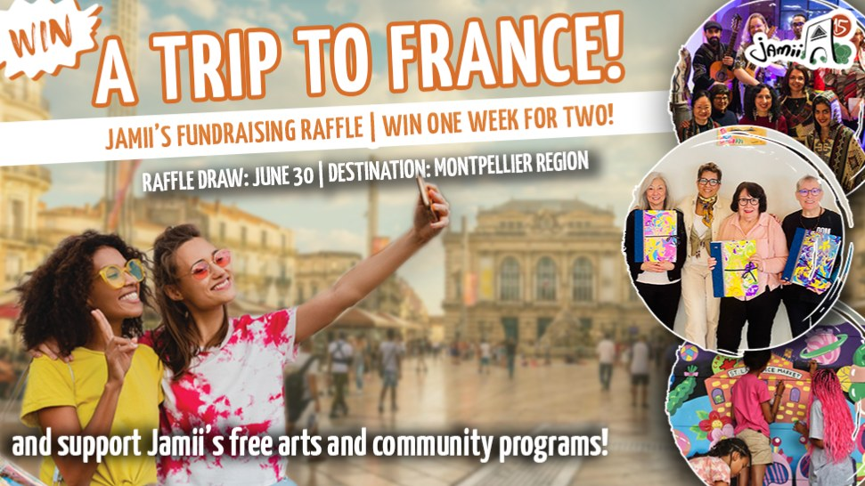
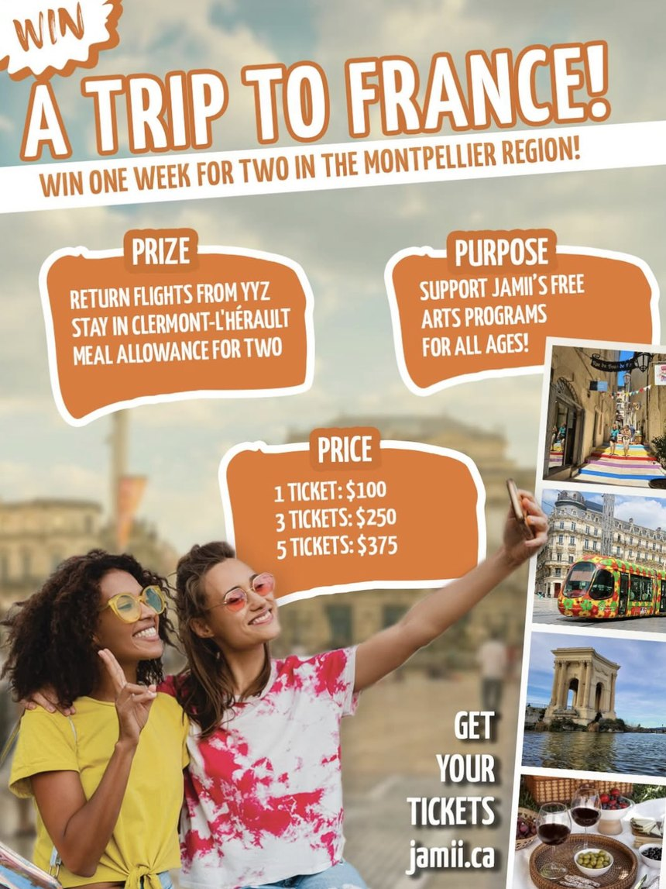
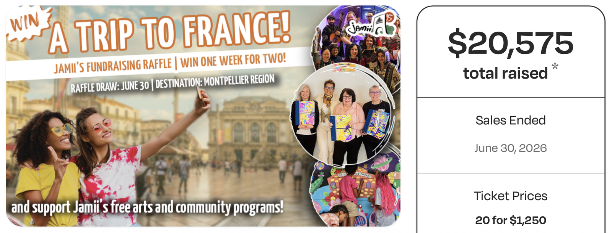

Jamii
The Jamii Raffle campaign: $20,575 raised
A six-week, video-led raffle that beat its $14,000 goal by about 47%.

The challenge
Jamii needed to fund its free arts and community programs. The raffle had a clear target: at least break even by raising $14,000. Jamii had run raffles before, but they were much smaller, such as a French wine raffle. This was its biggest by far, with a trip to France as the prize and tickets starting at $100, so the content had to build trust and keep people interested for the whole campaign.
The prize
The grand prize was a 7-day trip for two to Clermont-l’Hérault in southern France, worth about $8,200. It included:
- Round-trip flights from Toronto to Montpellier
- Six nights of accommodation
- A meal allowance
- Airport transfers in France
Only 355 tickets were available, on sale from June 1 to June 30, 2026. Tickets were $100 each, with bundles of 3 ($250), 5 ($375), 10 ($700) and 20 ($1,250). The draw took place on June 30, and the proceeds supported Jamii’s free programs. A limited number of tickets and a high-value, clearly defined prize made it easy to build content and urgency around.
Building anticipation
Before the full reveal, I posted a sneak peek of the raffle. A teaser gives people a reason to pay attention and come back for the announcement, so interest is already building before the big reveal.
What I did
I created short videos in three styles, each with its own job:
- Community spotlights: playful clips with regulars from the Jamii community, so the raffle felt personal and authentic.
- Founder spotlights: the Jamii founder speaking directly to the audience, a trusted and familiar voice for the ask.
- Scenic promos: general promotional videos set against scenery, keeping the raffle visible between the more personal posts.
I supported the videos with Facebook and Instagram posts and graphics.
Strategy
The creative direction was my own. Each choice had a marketing reason:
- Social proof builds trust. I featured regulars Jamii’s audience already knows. People respond to community members they recognise, which works as social proof and made the ask feel credible.
- A varied content mix prevents audience fatigue. Over six weeks, I rotated scenic promos (to keep the raffle visible) with videos of people speaking (to keep it human), so the feed stayed fresh.
- A teaser built anticipation. I posted a sneak peek before the full reveal to create curiosity and give people a reason to come back.
- Data-informed content planning. I looked at what was trending and chose formats by how much interaction they were likely to get, so reach was driven by audience behaviour and not by guesses.
- Doubling down on what worked. I watched how each video performed. When the founder spotlights did especially well, I made more of them, and that gave me the idea to feature community members as well.
Integrated promotion
The campaign used four outreach channels: social media, posters and flyers, ticket tables at events, and announcements at workshops. I created the online content, and beyond social media I worked with my manager on in-person promotion, so Jamii reached people both online and in the community:
- Posters and flyers. My manager and I handed flyers out at Jamii’s other events and put posters up around the neighbourhood, which kept the raffle visible offline.
- Point-of-sale ticket tables. Together we ran a table at events where people could buy tickets on the spot, turning interest into a sale at the moment it was strongest.
- Calls to action at workshops. At the end of each workshop, we paused to announce that the raffle was open and offered to sell tickets directly to a room of engaged attendees.

This was also about audience segmentation. Jamii’s older attendees were less comfortable buying online, so buying in person removed a barrier for them. Many preferred it. The online and offline channels reinforced each other and reached people the social content alone would not have.
The result
The raffle raised $20,575, which is $6,575 (about 47%) above the goal, and it was the highest-performing raffle Jamii has run. Jamii liked the variety of formats and asked me to create more videos afterwards.

What I’d do next time
The campaign worked mainly through Jamii’s existing audience and community. Next time, I would push to reach people who aren’t yet familiar with Jamii, since a larger audience means more ticket sales. I would:
- Widen the audience. Promote the trip as well as the cause, through cross-promotion with local businesses and community groups, and test small targeted boosts aimed at Ontario, where tickets could be sold.
- Measure which channels sell. The campaign moved quickly and I didn’t track sales by channel. Next time I would set up simple source tracking from day one: a “how did you hear about us?” question at purchase, a separate link for each channel, and a tally at the ticket table. That would show which channels sold the most tickets, so the next campaign’s effort goes where it counts.